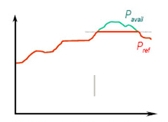
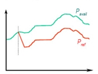

Existen parques que tienen aerogeneradores que permiten controlar la potencia entregada a la Red, independientemente de la velocidad del viento existente ( es decir, tienen elementos de control tales que la potencia entregada es menor que la que podría dar en ese momento). Con este tipo de aerogeneradores, el total de la potencia entregada a la Red puede ser controlada haciendo un reparto de la producción entre los diferentes aerogeneradores, para cada cambio en la consigna de producción. Este es el caso de los aerogeneradores tipo DFIGs y los controlados por Resistencia de Rotor.
Otros tipos de aerogeneradores, como los de velocidad fija de pala o los que funcionan mediante control por "Active Stall" (entrada en pérdidas de las palas), no tienen esa capacidad: en este caso el seguimiento de la consigna de potencia a entregar a la Red se realiza desconectando algunos de los aerogeneradores.
El parque puede implementar varios criterios para adaptarse al cambio de consigna de potencia. En las siguientes figuras se muestran algunos:
•Por limite superior.

•Por limitación de gradiente: se sigue el cambio de la consigna, pero sin transiciones bruscas.

•Con seguimiento continuo, pero con un margen de reserva:

También puede que el parque venga obligado a participar en el mantenimiento de la frecuencia de la Red, parte importante de la estabilidad de la misma: en este caso el sistema de control potencia entregada es más sofisticado y tiene que obedecer los parámetros de la Red, gobernados para una curva similar a la siguiente: